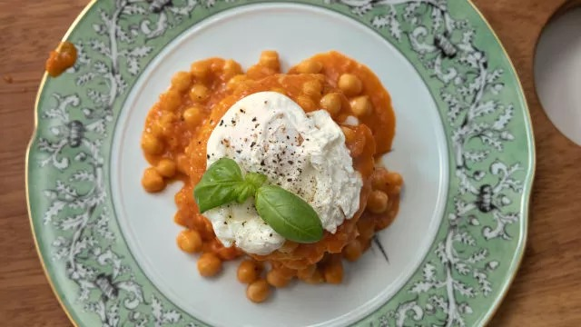

Estufado De Grão E Polenta

Estufado De Grão E Polenta
Ingredientes
- 1 ovo escalfado
- Hortelã
-
Estufado de grão:
- 3 dentes de alho
- Azeite
- 6 tomates
- 1 c. de sopa de manteiga
- 300g de grão de bico cozido
- 1 chávena de molho de tomate
- Pimentão doce
- Pimenta preta moída
- Manjericão fresco
- Sal
-
Polenta:
- 1 chávena de polenta
- Sal
Modo de Preparo
- Estufado de grão: Comece por esmagar e picar 3 dentes de alho e colocar num tacho com um bom fio de azeite já quente.
- Pique, de seguida, 6 tomates pelados e sem sementes e adicione ao tacho com 1 c. de sopa de manteiga, 300g de grão de bico cozido e 1 chávena de molho de tomate. Tempere com pimentão doce q.b, pimenta preta moída q.b, manjericão fresco q.b e sal q.b. Envolva e tape por mais ou menos 30 minutos.
- Polenta: Num tabuleiro coloque 1 chávena de polenta e 2 ou 3 chávenas de água. Tempere com sal e leve ao forno pré-aquecido180ºC por 50 minutos.
- Assim que estiver pronto, corte com um cortador redondo e emprate com o estufado de grão. Por cima coloque 1 ovo escalfado e hortelã q.b.